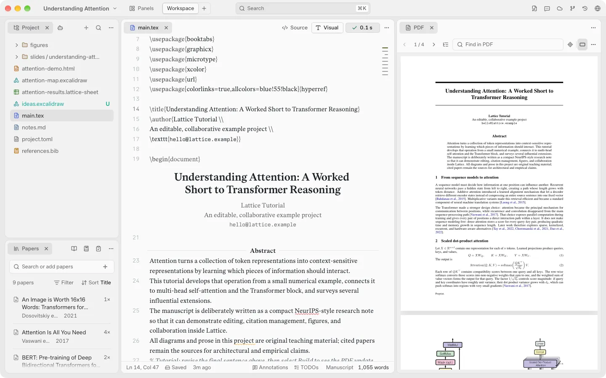
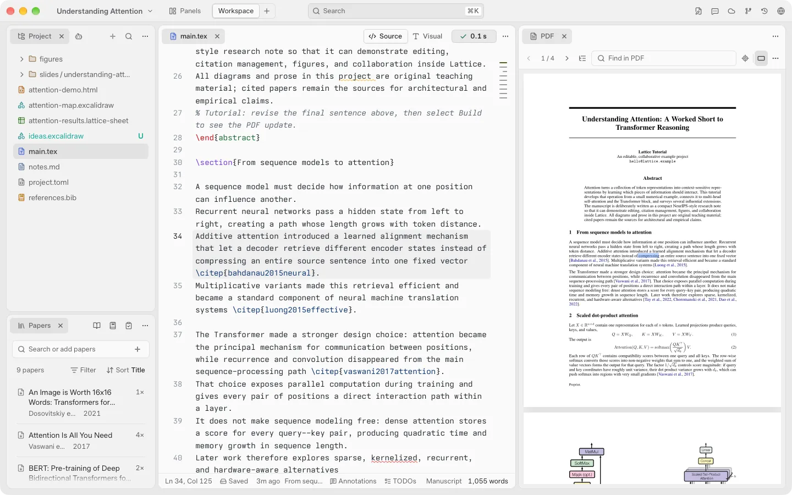

Writing
The editor
A .tex file opens in the source editor, with completion and diagnostics as you type. Above it, switch between:
- Source: the LaTeX as written.
- Visual: the same file with headings, emphasis, equations, lists and figures drawn in place. You still edit the same text; switch back any time.

Useful while writing:
- Format keys:
⌘Bbold,⌘Iemphasis,⌘⇧Minline math,⌘/comment a line,⌘⌥Ewrap in an equation. The full list is in Keyboard shortcuts (⌘?). - Find and replace:
⌘Fin the file,⌘⇧Fin the whole project. - Go to:
⌘Popens any file,⌘Ga line,⌘⇧Oa section or label. - Outline: the status bar's section name, or the marks at the right edge of the editor, take you through the document's structure.
- Markdown notes, spreadsheets, HTML pages, slides and boards live in the same project and open in their own editors.
Lattice saves as you type. Saved in the status bar shows when.
The PDF beside your source
Every save builds the PDF (see Building) and the PDF panel updates in place. To move between them:
- In the PDF, double-click a sentence to jump to the source line that wrote it.
- In the source, press
⌘⇧J(Jump to PDF) to show the current line in the PDF.

The PDF can also move to a window of its own for a second screen: Open the PDF in a separate window in the command palette (⌘K).